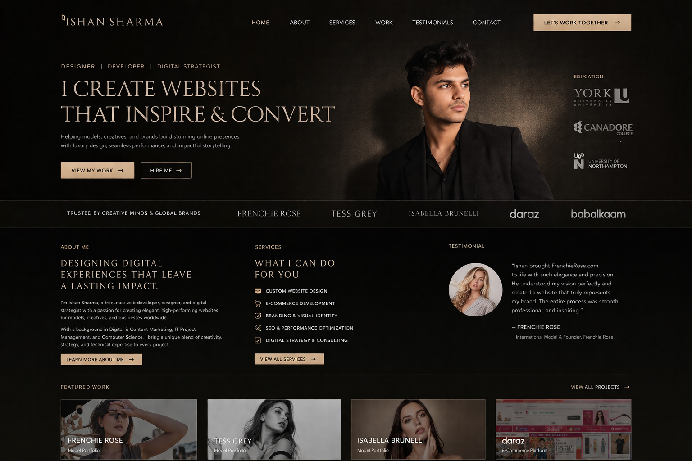
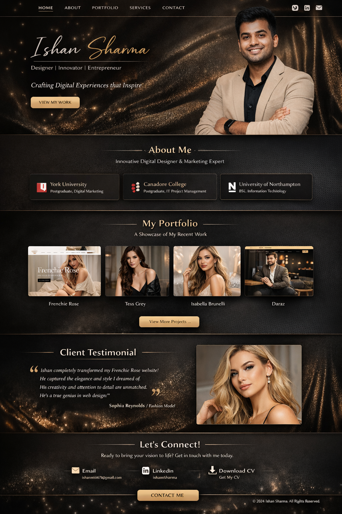

About Me
I’m Ishan Sharma, a freelance web developer and designer based in Etobicoke, Ontario. With a background in Digital and Content Marketing (York University) and Information Technology Project Management (Canadore College), I combine creative design with strategic thinking to craft digital experiences that connect brands with their audiences.
My journey spans from earning a Bachelor of Science in Information Technology at the University of Northampton (2017–2021) to hands‑on projects across industries. I specialize in blending aesthetic appeal with functional excellence, ensuring every site not only looks premium but performs seamlessly.
Skills
- Digital Marketing
- SEO & Analytics
- Web Design & Development
- Project Management
- Content Strategy
Selected Works

FrenchieRose
A refined, responsive website for a luxury brand. I focused on elegant typography and a seamless user experience that reflects exclusivity.
Visit Site
Tess Grey
A modern personal branding site for a professional, emphasizing strong imagery and a minimal color palette to convey trust and sophistication.
Visit SiteIsabella Brunelli
An artistic portfolio for a creative, showcasing work through immersive visuals and intuitive navigation.
Visit SiteTestimonial
“Working with Ishan on my FrenchieRose website was a transformative experience. He listened carefully to my vision and translated it into a digital masterpiece that feels both opulent and inviting. His attention to detail and passion for design shine through in every page. I couldn’t have asked for a better partner.”
Get in Touch
Ready to elevate your brand? Let’s create something beautiful together. Reach out via email or connect on LinkedIn.